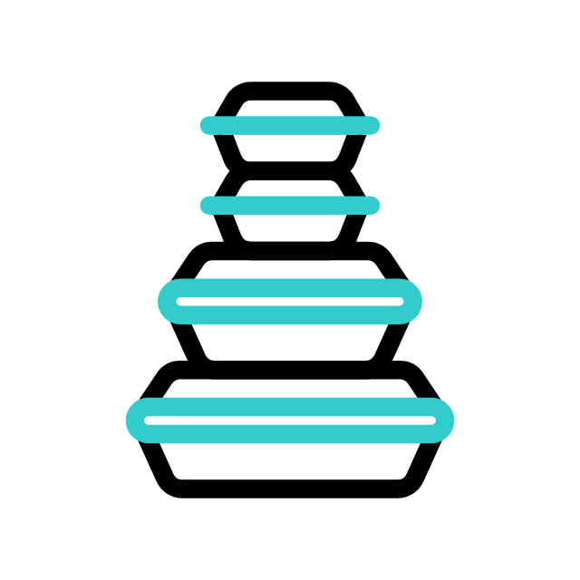

EI KEI RAMEN KIT
Su características más distintivas es el caldo de huesos de cerdo y pollo que se utiliza como base para la sopa. Este caldo se prepara a fuego lento durante varias horas para extraer todo el sabor y los nutrientes de los huesos. Para hacer el caldo de ramen, se comienzan por lavar y limpiar cuidadosamente los huesos de cerdo y pollo. Luego, se colocan en una olla grande con suficiente agua para cubrirlos completamente y se cocina todo a fuego lento durante varias horas. Durante este tiempo, el caldo se infusiona con los sabores y los nutrientes de los huesos. Una vez que el caldo esté listo, se sazona con salsa de soja para darle un sabor umami único y delicioso. Este ramen a base de caldo de huesos de cerdo y pollo cocidos a fuego lento durante varias horas y sazonado con salsa de soja es un platillo tradicional japonés que se ha convertido en un favorito mundial gracias a su sabor rico y complejo. Si te gusta la comida reconfortante y sabrosa, ¡no puedes dejar de probarlo! El resultado es un plato reconfortante, lleno de sabor y texturas diferentes.
SHOYU RAMEN KIT
Su características más distintivas es el caldo de huesos de cerdo que se utiliza como base para la sopa. Este caldo se prepara a fuego lento durante varias horas para extraer todo el sabor y los nutrientes de los huesos. Para hacer el caldo de ramen, se comienzan por lavar y limpiar cuidadosamente los huesos de cerdo. Luego, se colocan en una olla grande con suficiente agua para cubrirlos completamente y se cocina todo a fuego lento durante varias horas. Durante este tiempo, el caldo se infusiona con los sabores y los nutrientes de los huesos. Una vez que el caldo esté listo, se sazona con salsa de soja y sal para darle un sabor umami único y delicioso. Este ramen a base de caldo de huesos de cerdo cocidos a fuego lento durante varias horas y sazonado con salsa de soja y sal es un platillo tradicional japonés que se ha convertido en un favorito mundial gracias a su sabor rico y complejo. Si te gusta la comida reconfortante y sabrosa, ¡no puedes dejar de probarlo! El resultado es un plato reconfortante, lleno de sabor y texturas diferentes.
TONKOTSU RAMEN KIT
Su características más distintivas es el caldo de huesos de pollo que se utiliza como base para la sopa. Este caldo se prepara a fuego lento durante varias horas para extraer todo el sabor y los nutrientes de los huesos. Para hacer el caldo de ramen, se comienzan por lavar y limpiar cuidadosamente los huesos de pollo. Luego, se colocan en una olla grande con suficiente agua para cubrirlos completamente y se cocina todo a fuego lento durante varias horas. Durante este tiempo, el caldo se infusiona con los sabores y los nutrientes de los huesos. Una vez que el caldo esté listo, se sazona con salsa de soja para darle un sabor umami único y delicioso. Este ramen a base de caldo de huesos de pollo cocidos a fuego lento durante varias horas y sazonado con salsa de soja es un platillo tradicional japonés que se ha convertido en un favorito mundial gracias a su sabor rico y complejo. Si te gusta la comida reconfortante y sabrosa, ¡no puedes dejar de probarlo! El resultado es un plato reconfortante, lleno de sabor y texturas diferentes.